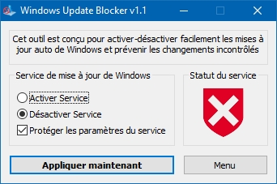

Version 1.1 (créé le 12/07/2020, modifié le 11/09/2025)
Fonctionne sur : Windows 10 et supérieur
Des mises à jour de Windows prennent trop d'espace de stockage et/ou ralentissent votre PC ? Nous avons la solution, c'est de bloquer les mise à jour de 16 à 20 Go. Attention ! Bloquer les mises à jour désactive Windows Update, ce qui empêche d'aller sur le Microsoft Store (ou Windows Store, qui et son ancien nom).
Pour bloquer les mises à jour, il faut télécharger Wub, ensuite, vous le décompressez puis vous l'ouvrez. (il peut vous demander des droits d'administrateur)
Vous cliquez sur désactiver Service, et enfin sur Appliquer maintenant.

Vous pouvez le vérifier vous-même dans les paramètres, puis mise à jour, si vous obtenez l’erreur (0x80070422), vous avez réussi à bloquer les mise à jour de Windows.